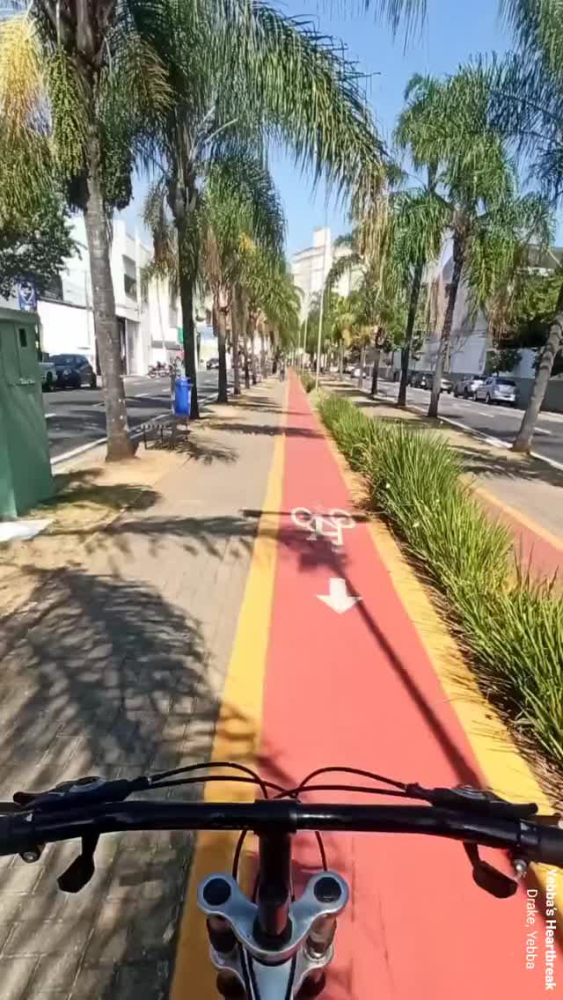
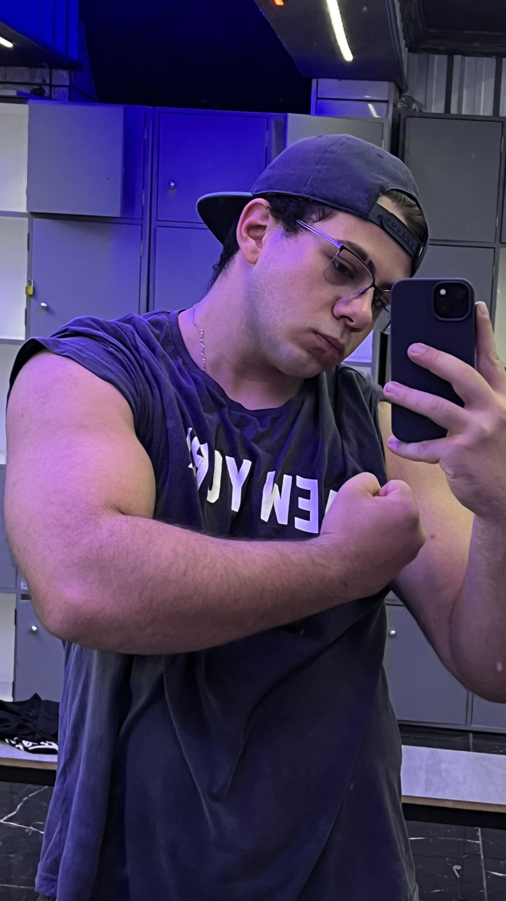

Sobre mim


Olá! Meu nome é Alexandre Soares de Oliveira e tenho uma grande paixão pela musculação.
Minha história com o esporte começou por volta de 2020, durante a pandemia global da
Covid-19. Naquele período de isolamento, andar de bicicleta para tentar perder
peso
surgiu como uma forma de ocupar o tempo e realizar alguma atividade física.
Inicialmente, o objetivo era manter a saúde física e mental naquele momento delicado. Com o tempo, percebi o prazer no esforço físico e a satisfação ao observar o progresso do meu corpo. A disciplina necessária para pedalar e manter uma alimentação adequada logo se estendeu para outras áreas da minha vida, trazendo mais foco e organização.
Inicialmente, o objetivo era manter a saúde física e mental naquele momento delicado. Com o tempo, percebi o prazer no esforço físico e a satisfação ao observar o progresso do meu corpo. A disciplina necessária para pedalar e manter uma alimentação adequada logo se estendeu para outras áreas da minha vida, trazendo mais foco e organização.
Essa experiência inicial com a atividade física virou uma chavinha na minha mente: pedalar não era o suficiente! Quando conheci a musculação, foi amor a "primeiro treino". Comecei a pesquisar sobre treinamentos e a observar os resultados que esse esporte proporcionava. A dedicação e a disciplina aprendidas com a bicicleta se tornaram a base para a minha jornada na musculação.
Hoje, a musculação é essencial na minha rotina e identidade. Não se trata apenas de estética, mas de bem-estar físico e mental, de superação constante e da busca por uma versão melhor de mim a cada dia. Aquele período incerto da pandemia foi o início de uma jornada transformadora, onde a bicicleta me guiou até encontrar minha verdadeira paixão: a musculação.
